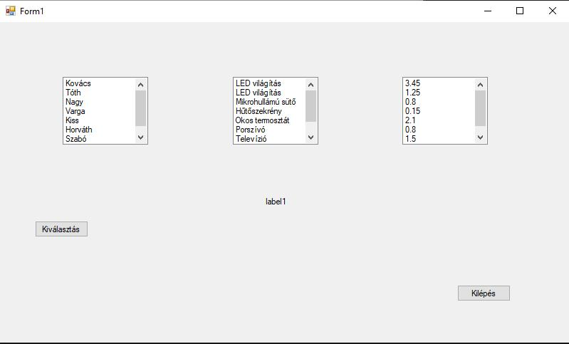
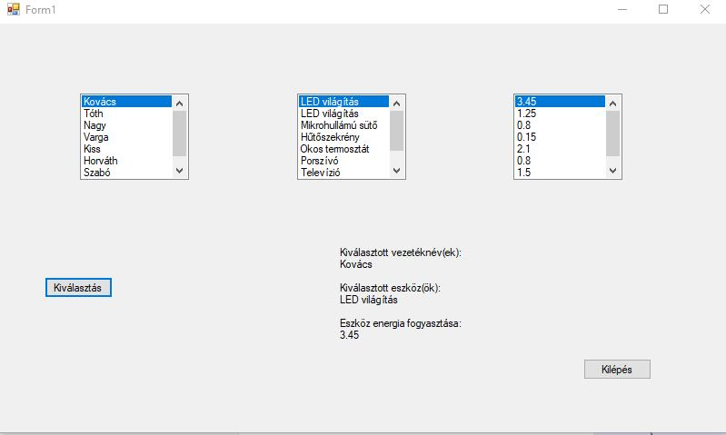

Programfejlesztés
A Windows Forms alkalmazás adatbázissal való összekapcsolásának megvalósítása során rengeteg új technikai ismeretre tettem szert, számos kihívással szembesültem, amelyek segítettek a fejlődésben.


A felhasználó kiválasztása után a program lekérdezi az adatbázisból, hogy milyen eszköze van és az mennyi energiát fogyaszt (kWh).
Ha a keresést úgy indítod el, hogy nem választasz ki felhasználót, a program egy hibaüzenetet jelenít meg.